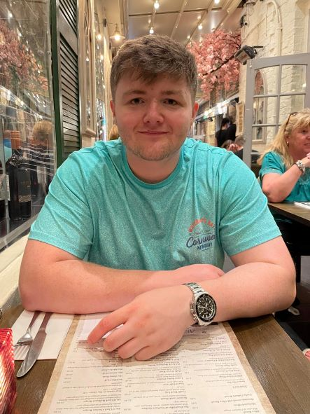

Web Designer & Developer - UK
I can design all types of basic webpages using services such as Figma to help visualise what the website should and will look like.
I can develop all types of basic webpages with the use of HTML, CSS & JavaScript.
I have experience using WordPress and actually designed a website for "All About Food Ltd". I collaborated with them using Figma to create a design and used WordPress to create the site and developed my knowledge of WordPress on the job!
I started my journey into the world of Web Design & Development when I was undertaking a level 2 course at my college, St John Rigby and this is where I first learned to code websites and design them. This was only the surface.
After having finished my course at college with D*D*D* grade, equivalent to 3 A*s at A-Level, I began studying Web Design & Development at university, Edge Hill University. This is where my knowledge, skills and expertise started to come into play and grow stronger than ever.
My Projects Explained
This project was to celebrate the 100 years of amazing work done by Stan Lee and the main aim of this project was to work as a team of four and create a website dedicated to Stan Lee. Along with this, an API had to be implemented to call his work from the Marvel Site to our section of our website. This involved communication well via Teams and pushing/pulling our changed code/work to GitHub.
View On GitHub View WebPageThe aim of this project was for us to design a functioning digital vending machine that could be operated through the command line interface of Linux Ubuntu.
View On GitHubThis project was my first proper web design & development project in university. The aim of this project was to build a website from scratch and make it look a certain way which it does and make it function properly.
View On GitHub View WebPageThis project was to build a web application and I built one that integrated a calendar and it allowed you to select any date/day and add some text to it to make it an event and save it. After saving it, it would highlight your selected day in a light red and display your text below the date, all using some HTML and JavaScript.
View On GitHub View WebPage